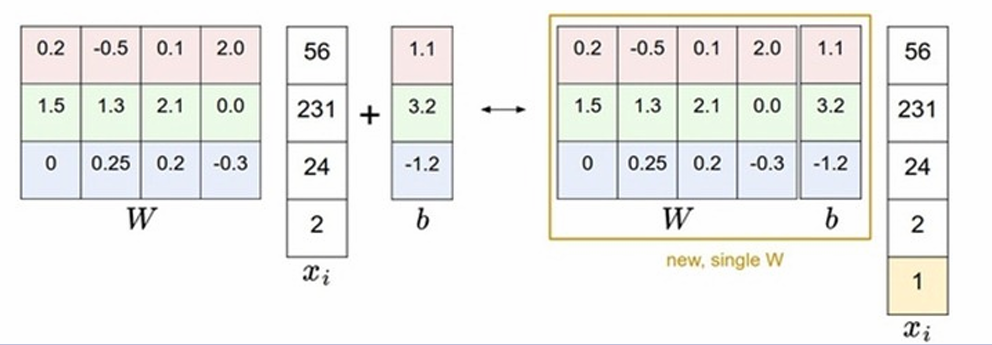
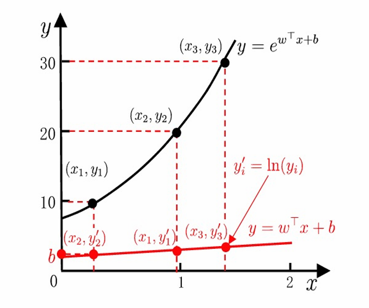
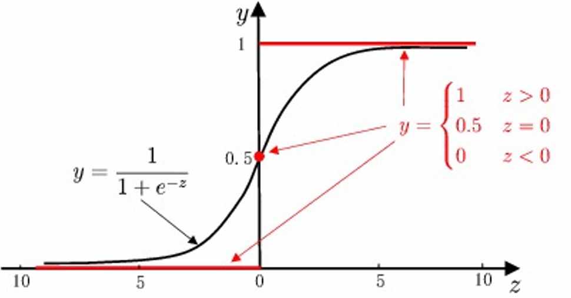
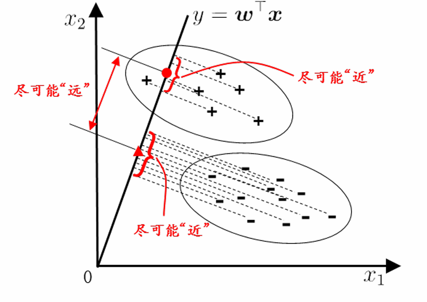
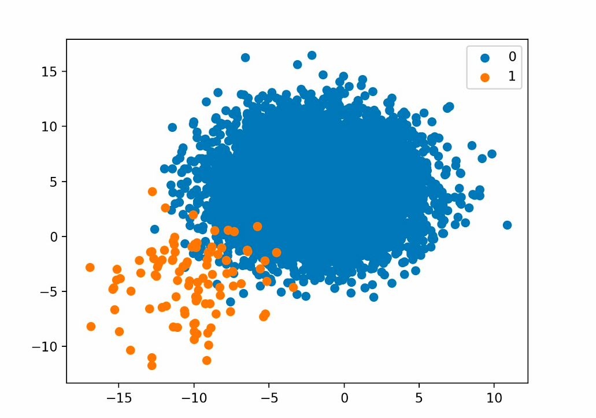

Chapter3 线性模型
线性模型引言
一般形式：
$$f(x)=w_1x_1+w_2x_2+...+w_dx_d+b$$
向量形式：
$$f(x)=w^Tx+b$$
其中，$w=(w_1;w_2;...;w_d)$，$x=(x_1;x_2;...;x_d)$。
感知机（Perceptron）:
感知机是最简单的线性分类模型，目标是找一个超平面，将输入空间的样本分成正类和负类。
假设分数为正，分类成正类；分数为负，分类成负类。则误分类会有：
$$-y_i(w^Tx_i+b)>0$$
所以可以顺势定义损失函数：
$$L(w,b)=-\sum\limits_{x_i\in m}y_i(w^Tx_i+b)$$ 参数对应的梯度：
$$\nabla_wL(w,b)=-\sum\limits_{x_i\in m}y_ix_i$$
$$\nabla_bL(w,b)=-\sum\limits_{x_i\in m}y_i$$
回归任务
线性回归（Linear Regression）：
线性回归的目的是学得一个线性模型，尽可能准确地预测实值的输出（连续值）。简单来说，就是直线拟合。
Note
离散属性处理：
- 有序关系：连续化为连续值
- 无序关系：若有$k$个可能的属性值，则转换为$k$维的独热编码。
最小二乘法 Least Square Method
最小二乘法用于评估线性回归模型的拟合程度，以单元线性回归为例（$x_i$ 和 $w$ 均为标量），我们要最小化均方误差：
$$E_{(w,b)}=\sum\limits_{i=1}^m(y_i-wx_i-b)^2$$
参数对应的梯度：
$$\frac{\partial E}{\partial w}=2[w\sum\limits_{i=1}^mx_i^2-\sum\limits_{i=1}^m(y_i-b)x_i]$$
$$\frac{\partial E}{\partial b}=2[mb-\sum\limits_{i=1}^m(y_i-wx_i)]$$
令梯度为 $0$，得到闭式解：
$$w=\frac{\sum\limits_{i=1}^m[y_i(x_i-\overline{x})]}{\sum\limits_{i=1}^mx_i^2-\frac{1}{m}(\sum\limits_{i=1}^mx_i)^2}$$
$$b=\frac{1}{m}\sum\limits_{i=1}^m(y_i-wx_i)$$
多元线性回归
现在考虑多属性的线性回归，每个 $x_i$ 为 $d$ 维列向量。
通过齐次表达，$w$ 和 $b$ 可以被吸收入向量形式 $\hat{w}=(w;b)$：

数据集表示为
$$\mathbf{X}=\begin{pmatrix} x_{11} & x_{12} & ... & x_{1d} & 1 \\ x_{21} & x_{22} & ... & x_{2d} & 1 \\ ... & ... & ... & ... & ... \\ x_{m1} & x_{m2} & ... & x_{md} & 1 \end{pmatrix}=\begin{pmatrix} x_1^T & 1 \\ x_2^T & 1 \\ ... & ... \\ x_m^T & 1 \end{pmatrix}$$
$$y=(y_1;y_2;...;y_m)$$
因此我们要最小化均方误差
$$E_{\hat{w}}=(y-\mathbf{X}\hat{w})^T(y-\mathbf{X}\hat{w})$$
对 $\hat{w}$ 求导得：
$$\frac{\partial E}{\partial \hat{w}}=2\mathbf{X}^T(\mathbf{X}\hat{w}-y)$$
令导数为 $0$ 即可得到闭式解。若 $\mathbf{X}^T\mathbf{X}$ 是满秩矩阵或正定矩阵，则 $\hat{w}$ 的最优解
$$\hat{w}^*=(\mathbf{X}^T\mathbf{X})^{-1}\mathbf{X}^Ty$$
此时的线性回归模型为
$$f(x_i)=x_i^T(\mathbf{X}^T\mathbf{X})^{-1}\mathbf{X}^Ty$$
Note
若 $\mathbf{X}^T\mathbf{X}$ 不是满秩矩阵或正定矩阵，则引入正则化。
广义线性模型
$$y=g^{-1}(w^Tx+b)$$
其中，$g$ 为联系函数（Link Function），要求单调可微。
对数线性回归是 $g=\ln()$ 的情况：
$$y=\ln^{-1}(w^Tx+b)~\Longrightarrow~\ln y =w^Tx+b$$

二分类任务
单位阶跃函数：
$$z=w^Tx+b$$
$$y=\begin{cases} 0 & z<0 \\ 0.5 & z=0 \\ 1 & z>0 \end{cases}$$
预测值大于零则输出 $1$（正例），小于零则输出 $0$（反例），等于零则输出 $0.5$（正反例都可以）。
缺点：不连续，因此使用对数几率函数替代。

对数几率回归
$$y=\frac{1}{1+e^{-z}}=\frac{1}{1+e^{-(w^Tx+b)}}$$
得到的结果是样本被分类为正例的概率（而不是直接的分类结果）。
将样本作为正例的相对可能性的对数称为对数几率（Log Odds）：
$$\ln\frac{p(y=1|x)}{p(y=0|x)}=w^Tx+b$$
$$p(y=1|x)=\frac{e^{w^Tx+b}}{1+e^{w^Tx+b}}$$
$$p(y=0|x)=\frac{1}{1+e^{w^Tx+b}}$$
极大似然法（Maximum Likelihood）:
那么我们又该如何调整 $w$ 和 $b$，来最大化样本属于其真实分类的概率？
我们可以尝试最大化对数似然函数：
$$l(w,b)=\sum\limits_{i=1}^m\ln p(y_i|x_i;w,b)$$
令 $\beta=(w;b)$，$\hat{x}=(x;1)$，则 $w^Tx+b$ 可简写为 $\beta^T\hat{x}$。
再令 $p_1(\hat{x_i};\beta)=p(y=1|\hat{x_i};\beta)$，$p_0(\hat{x_i};\beta)=p(y=0|\hat{x_i};\beta)$，则
$$p(y_i|x_i;w,b)=y_ip_1(\hat{x_i};\beta)+(1-y_i)p_0(\hat{x_i};\beta)$$
代入对数似然函数并化简得：
$$l(\beta)=\sum\limits_{i=1}^m(y_i\beta^T\hat{x}_i-\ln(1+e^{\beta^T\hat{x}_i}))$$
然后再取个反，求最小化即可。
线性判别分析 Linear Discriminant Analysis (LDA)

LDA 的思想是：找到最佳的投影方向，使得同类样例的投影点尽可能接近，异类样例的投影点尽可能远离。
LDA 的输入是样本数据，输出是投影方向 $w$。对于每个新样本，将其与投影方向做点积，得到的结果就是样本在投影方向上的判别得分，从而实现分类。
二分类 LDA：
- $D={(x_1,y_1),(x_2,y_2),...,(x_m,y_m)}$：$x_i$ 是 $n$ 维向量，$y_i\in{0,1}$
- $N_j~(j=0,1)$：第 $j$ 类样本的个数
- $X_j~(j=0,1)$：第 $j$ 类样本的集合
- $\mu_j~(j=0,1)$：第 $j$ 类样本的均值
- $\Sigma_j~(j=0,1)$：第 $j$ 类样本的协方差矩阵（去掉分母）
$\mu_j$ 的维度为 $n\times 1$，表达式为：
$$\mu_j=\frac{1}{N_j}\sum\limits_{x\in X_j}x$$
$\Sigma_j$ 的维度为 $n\times n$，表达式为：
$$\Sigma_j=\sum\limits_{x\in X_j}(x-\mu_j)(x-\mu_j)^T$$
对于二分类任务，只需要将数据投影到一条直线上，投影方向为 $n\times 1$ 的向量 $w$。
LDA 的第一个目标是最大化类间距离。两个类别的中心点$\mu_0$，$\mu_1$ 在 $w$ 方向上的投影分别为 $w^T\mu_0$，$w^T\mu_1$，因此我们要最大化下面的式子：
$$||w^T\mu_0-w^T\mu_1||_2^2$$
LDA 的第二个目标是最小化类内距离。两个类别在投影后的协方差分别为 $w^T\Sigma_0w$，$w^T\Sigma_1w$，因此我们要最小化下面的式子：
$$w^T\Sigma_0w+w^T\Sigma_1w$$
综上，我们的目标为最大化下面的式子：
$$J=\frac{||w^T\mu_0-w^T\mu_1||_2^2}{w^T\Sigma_0w+w^T\Sigma_1w}=\frac{w^T(\mu_0-\mu_1)(\mu_0-\mu_1)^T w}{w^T(\Sigma_0+\Sigma_1)w}$$
定义类内散度矩阵 $S_w$：
$$S_w=\Sigma_0+\Sigma_1$$
定义类间散度矩阵 $S_b$：
$$S_b=(\mu_0-\mu_1)(\mu_0-\mu_1)^T$$
则优化目标可重写为
$$J=\frac{w^TS_bw}{w^TS_ww}$$
我们将问题一般化，定义
$$R(A,B,x)=\frac{x^TAx}{x^TBx}$$
该式称为广义瑞利商（generalized Rayleigh quotient），我们的目标是求其最大值。要用到拉格朗日乘子法。跳转指路
若我们固定 $x^HBx=c\neq 0$（原本要求的 $w$ 只要知道方向就行），则就是要在这个限制下求得 $x^TAx$ 的最大值。
引入拉格朗日乘子，将其转化为拉格朗日函数的无约束极值问题：
$$L(x,\lambda)=x^TAx-\lambda(x^HBx-c)$$
在上式的极值处，应满足
$$\frac{\partial L(x,\lambda)}{\partial x}=0$$
$$Ax-\lambda Bx=0$$
$$B^{-1}Ax=\lambda x$$
回到 LDA 问题中，若 $J$ 要取极值，则应满足
$$S_bw=\lambda S_ww$$
对于任意向量 $w$，都有
$$S_ww=\frac{1}{\lambda}(\mu_0-\mu_1)(\mu_0-\mu_1)^Tw=(\mu_0-\mu_1)[\frac{1}{\lambda}(\mu_0-\mu_1)^Tw]$$
中括号内的部分是一个标量，因此 $S_ww$ 与 $(\mu_0-\mu_1)$ 方向相同。
由于我们不用知道 $w$ 的大小，只要确定方向，所以我们可以直接求
$$w=S_w^{-1}(\mu_0-\mu_1)$$
通常对 $S_w$ 进行奇异值分解：
$$S_w=U\Sigma V^T$$
其中，$\Sigma$ 是 $S_w$ 的奇异值组成的对角矩阵，这样可以得到
$$S_w^{-1}=V\Sigma^{-1}U^T$$
最终可以得到 $w$，即 LDA 的投影方向。
多分类 LDA：
可以将 LDA 推广到多分类任务中，假设一共有 $N$ 个类，且第 $i$ 类的样本数为 $m_i$。
这个时候，类内散度矩阵重写为
$$S_w=\sum\limits_{i=1}^N\Sigma_i=\sum\limits_{i=1}^N\sum\limits_{x\in X_i}(x-\mu_i)(x-\mu_i)^T$$
再新定义一个全局散度矩阵（其中 $\mu$ 为全局均值）：
$$S_t=\sum\limits_{i=1}^m(x_i-\mu)(x_i-\mu)^T=S_b+S_w$$
那么就可以得到重写后的类间散度矩阵：
$$S_b=S_t-S_w=\sum\limits_{i=1}^N m_i(\mu_i-\mu)(\mu_i-\mu)^T$$
Proof
$$x-\mu=(x-\mu_i)+(\mu_i-\mu)$$
$$ \begin{align} S_t & =\sum\limits_{i=1}^N\sum\limits_{x\in X_i}[(x-\mu_i)+(\mu_i-\mu)][(x-\mu_i)+(\mu_i-\mu)]^T \\ & =\sum\limits_{i=1}^N\sum\limits_{x\in X_i}[(x-\mu_i)(x-\mu_i)^T+(\mu_i-\mu)(\mu_i-\mu)^T+(x-\mu_i)(\mu_i-\mu)^T+(\mu_i-\mu)(x-\mu_i)^T] \end{align} $$
第一项：
$$\sum\limits_{i=1}^N\sum\limits_{x\in X_i}(x-\mu_i)(x-\mu_i)^T=S_w$$
第二项：
$$\sum\limits_{i=1}^N\sum\limits_{x\in X_i}(\mu_i-\mu)(\mu_i-\mu)^T=S_b$$
第三项：
$$\sum\limits_{i=1}^N\sum\limits_{x\in X_i}(x-\mu_i)(\mu_i-\mu)^T=\sum\limits_{i=1}^N(\sum\limits_{x\in X_i}(x-\mu_i))(\mu_i-\mu)^T=0$$
第四项：
$$\sum\limits_{i=1}^N\sum\limits_{x\in X_i}(\mu_i-\mu)(x-\mu_i)^T=\sum\limits_{i=1}^N(\mu_i-\mu)(\sum\limits_{x\in X_i}(x-\mu_i)^T)=0$$
多分类 LDA 可以有多种实现方法，使用 $S_b$、$S_w$、$S_t$ 三者中任意两个即可。最常见的优化目标是：
$$\max\limits_{\mathbf{W}}\frac{tr(\mathbf{W}^TS_b\mathbf{W})}{tr(\mathbf{W}^TS_w\mathbf{W})}$$
其中，$\mathbf{W}$ 为投影矩阵，维度为 $d\times (N-1)$ ，最优解为 $S_w^{-1}S_b$ 的 $N-1$ 个最大特征值对应的特征向量组成的矩阵，可以将数据投影到 $N-1$ 维空间中。
多分类任务
在多分类任务中，常常利用二分类学习器来解决问题。可以对问题进行拆分，为拆出的每个二分类任务训练一个分类器，然后再对每个分类器的预测结果进行集成得到最终结果。
一对一
拆分阶段：
$N$ 个类别两两配对，形成 $\frac{N(N-1)}{2}$ 个二分类任务及对应的学习器。
测试阶段：
每个学习器对测试样本进行预测，得到 $\frac{N(N-1)}{2}$ 个预测结果，然后投票表决。
一对其余
拆分阶段：
某一类作为正例，其他作为反例，形成 $N$ 个二分类任务及对应的学习器。
测试阶段：
每个学习器对测试样本进行预测，得到 $N$ 个预测结果，比较各类别的置信度，选择置信度最高的类别作为最终预测结果。
多对多
若干类作为正例，若干类作为反例。使用纠错输出码（ECOC）。
编码阶段：
对 $N$ 个类别做 $M$ 次划分，每次划分都将一部分类别划为正例，另一部分类别划为反例。这样，对于每个类别，都有一个长度为 $M$ 的二进制编码，每一位表示在 第$i$ 次划分中该类别是正例还是反例。
解码阶段：
当有一个新样本需要分类时，使用 $M$ 个二分类器对该样本进行预测，得到一个长度为 $M$ 的预测码。然后，将该预测码与每个类别的编码进行比较，选择距离最近的类别作为最终预测结果。
类别不平衡问题

类别不平衡问题，指的是不同类别训练样例数相差很大（正例少，负例多）。
解决方法：再缩放
- 欠采样：减少负例样本数
- 过采样：增加正例样本数
- 阈值移动：调整分类阈值